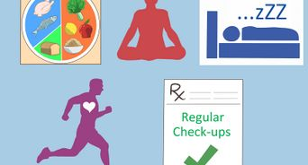
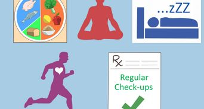

Public Holiday/Weekend : 10:00 AM - 11:00 PM
Health
Services
What is Dementia?
As we age, we may find our memory deteriorating. This is known as age-associated memory impairment and is considered part of the normal ageing process.
Unlike what most people think, dementia is not a disease, but a syndrome in which there is a deterioration in cognitive functions, including memory, thinking, orientation, comprehension, calculation, learning capacity, language, judgement and the ability to perform everyday tasks.
Types of Dementia
Oftentimes, we hear people using the terms Alzheimer’s and dementia interchangeably. However, they are not the same. Dementia is an umbrella term used to describe a group of symptoms, and Alzheimer’s is one of the many subtypes of dementia. In fact, there are over 400 types of dementia!
Here are 10 of the more common types of dementia:
Alzheimer’s Disease
Alzheimer’s disease is characterised by brain cell death and is the most common form of dementia, making up 60 to 80% of all cases. Older adults are more susceptible to this form of dementia.
Early signs include depression and short-term memory loss, and includes confusion, mood changes and trouble speaking and walking as the condition progresses.
Vascular Dementia
Vascular dementia is the second most common form of dementia, comprising 20% of all dementia cases, and is caused by a lack of blood flow to the brain. It tends to be more prevalent among older adults and may be related to atherosclerotic disease or stroke. Symptoms may appear progressively or suddenly, depending on the cause.
In the early stages, confusion and disorientation are common signs, but in the later stages, people may face trouble concentrating and completing tasks. Problems with vision and hallucinations may occur as well.
Lewy Body Dementia
Lewy bodies are small round clumps of protein that build up inside the brain’s nerve cells, disrupting neural signals and communication.
This causes memory loss, disorientation and visual hallucination. Sometimes, people may also have trouble falling asleep at night or unexpectedly fall asleep in the day. Many of the symptoms experienced by people with Lewy body dementia are similar to those with Alzheimer or Parkinson diseases.
Parkinson’s Disease
Parkinson’s disease, at advanced stages, may lead to dementia. Early symptoms include problems with reasoning and judgement and can develop into confusion, hallucinations, irritability, depression, paranoia and speech difficulties as the condition progresses.
Frontotemporal Dementia
Frontotemporal dementia, also known as Pick’s disease, is a term used to describe several types of dementia which affects the front and side of the brain – areas that control language and behaviour. It can affect people as young as 45 years old.
Naturally, most of the symptoms of those with frontotemporal dementia revolve around behaviour and language, including loss of inhibitions and motivation, compulsive behaviour and forgetting the meaning of common words.
Creutzfeldt-Jakob Disease
Creutzfeldt-Jakob disease is one of the rarest forms of dementia, with only 1 in 1 million being diagnosed with this condition. It progresses rapidly, and people often die within a year of diagnosis.
Its symptoms are similar to other forms of dementia, including confusion, memory loss, agitation and depression. Those with Creutzfeldt-Jakob disease may also experience muscle twitching and stiffness.
Wernicke-Korsakoff Syndrome
Wernicke’s disease and Korsakoff syndrome are two separate but linked conditions, often grouped together and known as Wernicke-Korsakoff syndrome. Technically, Wernicke-Korsakoff syndrome is not a form of dementia, but has similar symptoms hence is often classified under it.
Wernicke disease, also known as Wernicke’s encephalopathy, occurs due to bleeding in the lower sections of the brain caused by a vitamin B-1 deficiency. This vitamin deficiency could arise from malnutrition or chronic infections, but the most common cause is alcoholism.
Left untreated, physical symptoms such as double vision and a loss of muscle coordination tend to reduce, as signs of Korsakoff syndrome surface. Symptoms of Korsakoff syndrome include difficulty in processing information, learning new skills and remembering things.
Normal Pressure Hydrocephalus
Normal pressure hydrocephalus (NPH) is a condition that causes fluid build-up in the brain’s ventricles, affecting its tissue and leading to dementia symptoms. Some potential causes of this condition include injury, bleeding, infection, brain tumour and previous brain surgeries.
Those with the condition may experience poor balance, forgetfulness, mood swings, depression, frequent falls and loss of bowel or bladder control.
Thankfully, NPH may be reversed, controlled and cured with surgery, hence it is important to seek treatment as early as possible to reduce brain damage.
Huntington’s Disease
Huntington’s disease is a genetic condition and onset of dementia symptoms tend to occur in younger adults. Due to the premature breakdown of the brain’s nerve cells, this condition can cause dementia and impaired movement.
There are two types of Huntington’s disease: juvenile and adult-onset, which corresponds to when the symptoms first appear. Symptoms for those with the juvenile form tend to appear during childhood or adolescence, while those with the adult form tend to only experience symptoms in their 30s or 40s.
Besides the physical symptoms of jerking, difficulty walking and trouble swallowing, dementia-related symptoms include difficulty focusing on tasks, impulse control problems, trouble speaking clearly and difficulty learning new things.
Mixed Dementia
Mixed dementia occurs when a person has more than one form of dementia and is relatively common. In fact, 45% of those with mixed dementia are unaware of it. The most common combination is vascular dementia and Alzheimer’s disease.
While the symptoms vary depending on the varying combination, most people will experience difficulty speaking and walking as the condition progresses.
Dementia Symptoms
Dementia is a term used to describe a group of symptoms affecting memory, thinking, and social abilities severely enough to interfere with daily functioning. While symptoms can vary depending on the cause and the individual, common signs and symptoms of dementia include:
1. Memory loss: Forgetfulness that disrupts daily life, especially forgetting recently learned information or important dates.
2. Difficulty communicating: Difficulty finding the right words, completing sentences, or following conversations.
3.Impaired reasoning and judgment: Difficulty making decisions, solving problems, or understanding instructions.
4. Impaired visual perception: Difficulty with spatial relationships, interpreting visual information, or judging distances.
5.Impaired ability to focus and pay attention: Difficulty concentrating on tasks, following conversations, or completing projects.
6. Decline in reasoning and judgment: Changes in judgment or decision-making abilities, leading to poor choices or risky behavior.
7.Disorientation and confusion: Getting lost in familiar places, forgetting the time or date, or becoming confused about where they are or how they got there.
8.Difficulty with familiar tasks: Struggling to perform everyday tasks that were once routine, such as cooking, cleaning, or managing finances.
9.Changes in mood and behavior: Mood swings, irritability, apathy, depression, anxiety, or paranoia may occur.
10.Loss of initiative: Decreased motivation or interest in activities they used to enjoy.
 

Preventing Dementia
There is no sure way to prevent dementia and more research is needed to find out its cause. However, there are some steps we can take to improve our overall health, which may be beneficial in preventing the onset of dementia
Exercise regularly
Aerobic exercises, in particular, are great for our heart and circulatory system, boosting brain health. Strength, balance and flexibility exercises can also help seniors stay agile and avoid falls, lowering the risk of brain injury and hence dementia.
In general, consuming a diet low in sugar and saturated fat, and high in omega fats, vitamins and fibre may prevent dementia. Frequent and regular consumption of tea also helps, due to the bioactive compounds within which contain anti-inflammatory and antioxidant potential, protecting our brains.
Adopt a healthy diet
Making the right food choices can keep obesity and diabetes at bay and protect our brain function. For those with dementia, proper nutrition can help to ease behavioural symptoms. It’s also really important to monitor your vitals and keep them under control!
In the early stages, confusion and disorientation are common signs, but in the later stages, people may face trouble concentrating and completing tasks. Problems with vision and hallucinations may occur as well.
Quit smoking
Smoking increases your risk of cardiovascular disease which are risk factors for the two most common types of dementia: Alzheimer’s and vascular dementia. Quitting smoking can be difficult but there are clinics you can attend for smoking cessation therapies.
Get sufficient and quality sleep
Poor sleep promotes the buildup of proteins in the brain that can lead to impaired memory and Alzheimer’s.
For those with poor sleep habits, start by establishing a regular bedtime and commit to it. If you have insomnia or sleep problems such as sleep apnea, consult your doctor and work out a solution that is best for you.